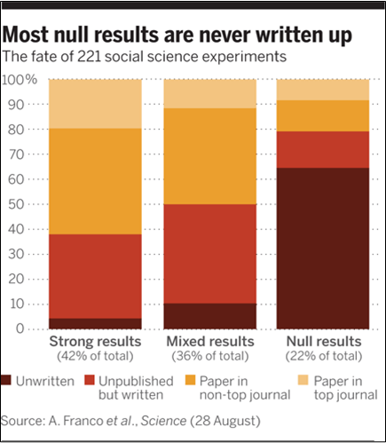

A Minimal Book Example
1
url: your book url like https://bookdown.org/yihui/bookdown
2
Introducción
2.1
La Confiabilidad de la Evidencia
2.1.1
Fraude
2.1.2
Caso de Francesca Gino
2.1.3
Incapacidad para reproducir resultados
2.2
Cambios de la AEA sobre Transparencia y el Editor de Datos
2.3
Mejorar la Confiabilidad de la Investigación
3
Investigación Ética
3.1
Normas mertonianas para una investigación ética
3.1.1
Universalismo
3.1.2
Comunalismo
3.1.3
Desinterés
3.1.4
Escepticismo Organizado
3.2
Normas en la práctica
3.3
Problemas
3.3.1
Sesgo en las publicaciones
4
En la Practica (Anderson et al 2007)
5
Sesgo de Publicacion en TESS/NSF (Franco et al 2014)
6
Problema #2: P-Hacking
6.0.1
Modelo de Ioannidis: Framework para Hallazgos Falsos Positivos
Published with bookdown
Haciendo Ciencia Abierta
5
Sesgo de Publicacion en TESS/NSF
(Franco et al 2014)
